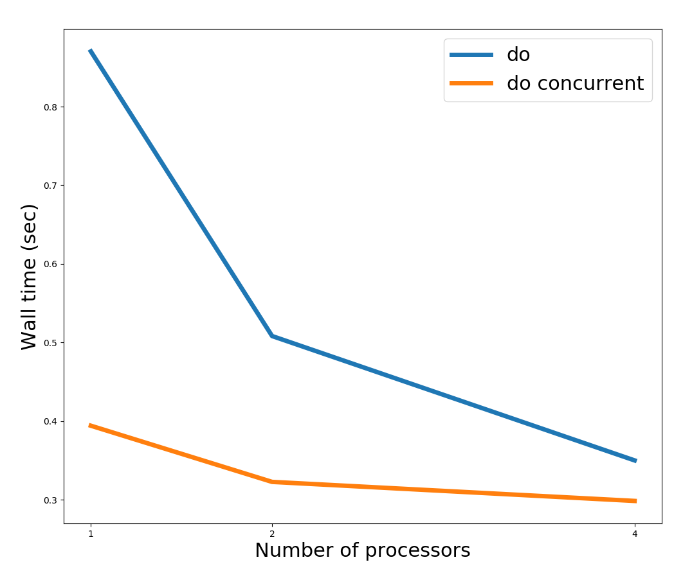

For access to this homework on github, click here.
This project uses Fortran's 2008/2015 standards, which include specifications for coarray Fortran. Coarrays allow code developers to use state-of-the-art MPI constructs and parallelization without ever having to call MPI subroutines or functions.
The purpose of coarray Fortran is to abstract away tedious MPI calls
by allowing users to specify distributed variables with an extra
dimension in square brackets [*]. This extra square bracket allows
users to access elements within a given codimension. A simple
example is the following:
program coarray_test
integer :: i, n = 100
real(8), allocatable :: x(:)[:] ! coarray x
allocate(x(n)[*]) ! Allocates x to be of size n on each codimension
do i = 1,n
x(i) = i*this_image()
end do
print *, "Image ", this_image(), "of ", num_images(), " has x(1) = ", x(1)
deallocate(x)
end programIn this simple example, we create an allocatable coarray of size 100. During runtime, the number of codimensions is determined by the number of processes started up, just like in an MPI program. For example, we would compile and then run the above code via
$ caf -o coarray_test coarray_test.f90
$ cafrun -np 4 ./coarray_testHere, we use the caf compiler, which is essentially a wrapper around
mpif90, as well as cafrun, which is very similar to mpirun.
As can be seen in the code above, coarray code takes a significant burden off of the programmer in terms of what needs to be done to start up a parallel program. Specifically, we can see the following constructs that are "built-in" in the example code:
varname[*]this_image(): Returns the process/image id for each imagenum_images(): Returns the total number of images specified at runtimeThese intrinsic functions are very convenient to use, but this does not mean that coarray code is in any way restrictive of advanced MPI features. Coarrays naturally use advanced MPI features 'under the hood' which will be discussed later, but an important point is that any coarray Fortran code can be modified to use any MPI functions or subroutines that come built in to a particular MPI standard. For example, it is perfectly valid to set up a new communicator in a coarray code and program with standard MPI if desired. However, coarrays are often a much better way to do things.
There are several points for my doing this project:
opencoarraysIn addressing these points, I will cover four topics, devoting a section below to each topic:
Coarray Fortran was specifically designed with the idea of
high-performance numerical computing in mind. A new construct called
do concurrent was added to the language, and this feature allows
users to gain added performance benefits when performing operations
that do not carry data dependencies. A simple example is adding two
vectors together. In the normal Fortran case, we would write
do i=1,n
z(i) = x(i) + y(i)
end doIn Coarray Fortran, we can easily convert this loop to:
do concurrrent(i=1:n)
z(i) = x(i) + y(i)
end doBy writing do concurrent, we specify to the compiler that there are
no data dependencies between z(i) and z(j) for i not equal to
j. This allows the compiler to optimize the loop for faster
performance. The particular form of optimization is completely up to
the compiler, but the two most important capabilities are: 1)
threading and 2) vectorization. Currently in gfortran, the compiler
uses vectorization when using do concurrent. However, this syntax
could just as well enable threading under the hood, so that the do
concurrent loop above is essentially turned in to an OpenMP construct.
This optimization is the first example of how coarray Fortran provides high performance with very easy-to-use syntax. In my project code, I have loops that look as follows:
! Standard Fortran loop
do j = 2, n2me-1
do i = 2, n1me-1
a(i,j) = b(i,j) + epsilon*( &
b(i-1,j+1) + b(i,j+1) + b(i+1,j+1) + &
b(i-1,j ) - dble(8.)*b(i,j ) + b(i+1,j ) + &
b(i-1,j-1) + b(i,j-1) + b(i+1,j-1))
end do
end do After modifying this, I have:
! Coarray concurrency loop
do concurrent(j = 2:n2me-1)
do concurrent(i = 2:n1me-1)
a(i,j) = b(i,j) + epsilon*( &
b(i-1,j+1) + b(i,j+1) + b(i+1,j+1) + &
b(i-1,j ) - dble(8.)*b(i,j ) + b(i+1,j ) + &
b(i-1,j-1) + b(i,j-1) + b(i+1,j-1))
end do
end doThe runtime performance of these two codes is shown below, using 1,2, and 4 processors.

The reason here for the lower runtime of do concurrent is that the
compiler optimized the loop using vectorization. The nice part about
allowing the compiler to do this is that the code is portable across a
variety of machines, and each machine can have its own set of rules
for how to best optimize a do concurrent loop. Therefore, one
machine might use vectorization while another might implement
threading, depending on how the compiler decides to optimize the
code. This allows for fine-grained optimization for a particular
machine or computer architecture, while not sacrificing generality in
the code itself.
In the first homework assignment, we implemented a solution to the Laplace smoothing algorithm using 3 different MPI constructs:
MPI_Send and MPI_RecvMPI_SendRecvMPI_ISend and MPI_IRecv (non-blocking)For this project, I implemented two different versions of Coarray
Fortran code. The first, referred to as Coarrays, does the
following:
a(:,:)[:] and b(:,:)[:] of size n1me =
n1/np1 x n2me = n2/np2 for each processn1me or n2meThe second version of coarray code is referred to as Coarrays w/
Derived Datatypes. This version does the following:
a(:,:)[:] and b(:,:)[:] of size n1me =
n1/np1 + 2 x n2me = n2/np2 + 2 for each process. This provides
border cells that allow storage of the edge data within each arrayThis second formulation allows for two significant advantages: 1) The code is particularly simple to write since no contiguous border arrays are needed and 2) MPI Derived data types are used under the hood.
The MPI derived datatypes used under the hood require further
explanation. When sending data under this Coarrays w/ Derived
Datatypes version, we have the following simple code:
subroutine send_edges()
! Get N and S data
if (nid(2) > 0) b(n1me+2,:) = b(2,:)[nid(2)]
if (nid(4) > 0) b(1,:) = b(n1me+1,:)[nid(4)]
sync all
! Get W and E data
if (nid(3) > 0) b(:,n2me+2) = b(:,2)[nid(3)]
if (nid(1) > 0) b(:,1) = b(:,n2me+1)[nid(1)]
sync all
end subroutine send_edgesNote that here nid is of size 4 and contains the neighbor id's of
all surrounding cells. If no cell exists to the left (i=1), bottom
(i=2
), right (i=3), or top (i=4), then nid(i) is set to -1.
In the above example, we first ask whether a neighbor to the South
(nid(2)) exists. If it does, we grab the first row of data from
nid(2)'s array and place it in the last row of our id. This is done
via the line
b(n1me+2,:) = b(2,:)[nid(2)]We can see exactly how simple coarray code is in this line. Under the
hood, this operation involves an MPI_Get call by one process,
requesting the second row of b on the process corresponding to
nid(2). Importantly, this is a one-sided MPI communication under
the hood. (Generally, one-sided communication is more efficient than
two-sided communication.)
The other aspect of the above line that is very nice is that we are
sending non-contiguous data. By grabbing the second row of b in
image nid(2), we are requesting values that are located n1me+2
values away in memory. Fortunately, coarrays implements MPI Derived
data types under the hood so that this noncontiguous block can be
sent. This is a very significant advantage, since we know that MPI
derived datatypes are much faster on modern computer architectures,
due to the fact that modern processors use Remote Direct Memory Access
(RDMA).
Overall, we see from this very simple line three great advantages of Coarray Fortran:
We can now ask how the performance of the three versions of MPI listed above compare with the two versions of coarray code compare. The Wall time of the three codes is shown in the Figure below.
Here, we see that between the 3 MPI implementations, the non-blocking is the fastest, as we expect. The blocking routines are roughly the same level of performance.
We see, however, that the Coarray Fortran code is faster than any of the MPI implementations.
I also studied the speedup for these 5 codes on a larger problem (one
for which n1 = 4096, n2 = 4096, as opposed to n1 = n2 =
1024. These results are shown in the figure below.

These can easily be turned into an efficiency plot:

Both the speedup and efficiency show roughly the same behavior for MPI and Coarrays, meaning that there is nothing to lose by switching to Coarray code. In most problems, we would actually expect coarray code to outperform the MPI implementations in terms of speedup/efficiency.
As can be seen above, I was only able to run the code on 1, 2, and 4
processors. The reason for this was a problem with the MPICH
installation on the cluster I was using. Since I was unable to get
MPICH to work correctly with the caf compiler on the cluster, I was
not able to obtain results on 8, 16 and more processors. I hope to
have time to install MPICH correctly at some point.
Because the cluster was not working correctly, I was forced to use a virtual machine on my laptop to run the code. My laptop has 4 cores, but even so, the virtual machine may have caused things to run much slower than should be expected on my laptop.
Important Note: These considerations should explain why the efficiency and speedup is so poor in the above plots.
Another important metric for comparing Coarray Fortran to standard MPI Fortran is to look at the code complexity. As has already been described, Coarray Fortran code has far simpler syntax than traditional MPI Fortran. However, we can quantify this in a simpler way by looking at the number of lines of code involved in each case. The figure below presents the number of lines of code.

In the above figure, we count the lines of code for MPI and Coarray Fortran in the following ways:
MPI. This is almost entirely MPI commands, such as MPI_Recv,
MPI_Barrier, etc. Coarray Fortran: Count the number of sync all statements and
any statements involving array assignment, for example:
b(1,:) = b(n,:)[2]As shown in the figure, Coarray Fortran requires many fewer lines of code to perform essentially the same task. In fact, if we were to implement MPI Derived Data types using standard MPI Fortran, we would expect to have even more lines of MPI code than the 3 examples shown above. In some sense, counting the number of lines of code is also a generous comparison for MPI. If we were to count the number of characters used in MPI code vs. coarray code, the discrepacnies in the above figure would be even greater. Furthermore, it is difficult to quantify debug time from a simple character/line count alone. Often times, MPI code can be extremely tedious to debug, and the time spent debugging might not always scale linearly with the number of lines or characters. In these respects, Coarray Fortran offers a great advantage.
In addition to the Coarray features described above, there are several features new to the Fortran 2015 standards that deserve mention. One important addition is the ability to do collective communication routines with coarrays.
The collective communication calls include:
co_sum (collective sum): sum the elements of elements of a coarray
on each image and store the result in a specified imageco_reduce (collective reduction operation): similar to co_sum,
but for a generic operation to be applied to all elements of a
coarray.Of the above, I ended up using only co_sum to compute the total norm
of the array. That syntax looks as follows:
norm = sum(a**2)
call co_sum(norm, result_image=1)
if (this_image() == 1) norm = sqrt(norm)which stores the computed norm on image 1 (note that image 1 in coarray Fortran is the first image -- not image 0, as is the case in MPI Fortran).
In addition to these features, Coarray Fortran now (very recently) has the ability to detect failed images. This is very important for exascale computing, where the probability of a node failing becomes much larger, due to the sheer number of processors running at a given time. In these cases, it is important for the code to adapt and respond to the failed images. Coarray Fortran, when built with very recent versions of MPICH, includes the intrinsic function
failed_images()as well as other features to assist with these scenarios. This is very recent, and although I have not used this feature before, it should be very useful for code developers as we approach exascale computing.